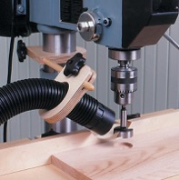
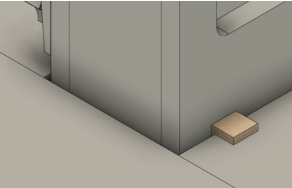
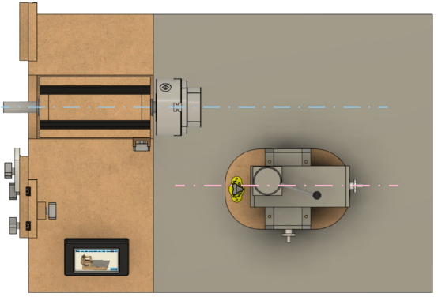

|
|

|
Startup Activities |
|
These steps are good ones to follow at the start of an ornamental turning session. They are practices learned after years of having not done them and regretted it when the end was achieved.
| ||||||||||||
Start with Protecting Your HealthOrnamental turning produces a lot of very fine dust, and this fine dust can be even more damaging than the sawdust you see. It is easy to inhale and can get deep into your lungs. Eric Meier noted on The Wood Database, Forget about the large chips and visible sawdust: perhaps the most damaging element is the invisible fine dust (sometimes called "coarse inhalable particles" ranging from 2-10 microns). Basically, these tiny bits of sawdust float around the air and linger even after the tools have stopped running. These invisible particles get inhaled and cause tiny wounds and scarring to our lungs: each time this happens, it causes a very small amount of irreversible damage. The immediate effect is unnoticeable, but over long periods of time, this can result in significantly decreased lung capacity, and a number of other health issues. This is such a big enough issue that the United States Department of Labor's Occupational Safety and Health Administration (OSHA) has issued guidance and standards about it. They also noted, Wood dust becomes a potential health problem when wood particles from processes such as sanding and cutting become airborne. Breathing these particles may cause allergic respiratory symptoms, mucosal and non-allergic respiratory symptoms, and cancer.

Drill Press Sawdust Collection
Additionally, ornamental turning is usually done using woods which have a high probability of causing allergies and may even have some toxicity. Eric Meier has done a great job outlining this issue on his web site, The Wood Database. The list he has compiled contains quite a few woods commonly used. I strongly recommend that you use a vacuum system with the intake as close to the cutting action as possible. The picture to the right shows dust collection on a drill press, but the same approach can be done on the rose engine lathe. Mine is held in a Noga arm which I move around to where it is most effective (but not intrusive). An overhead air filtration is also recommended; something like the PowerMatic PM1200. There are other good ones, and I recommend you get such a machine when you can. | ||||||||||||
Step 1: Center the Headstock
Note: This step is only critical if you need to ensure the uniformity in a box's inside and outside surfaces. If you are not needing to do that, you may certainly skip to the next step, but this is a good idea regardless. The steps outlined below ensure that the headstock rocks the same distance towards the far side as the near side. The diagrams shown on the below demonstrate the idea. If the headstock rocks equally to both sides (as shown in the green above), then the planned rosette pattern will cut as expected. Conversely, if the headstock is set to rock unequally, (as shown in the red diagrams above), the pattern may be different than expected. These instructions are for the MDF Rose Engine; if you are using a different machine, the parts used will be different, but the overall concept is the same. To center the headstock's movement (rocking) as shown in the green diagram, follow the steps below. There are other methods, but this is my favorite and the easiest. | ||||||||||||
|

Centering Block in Use
| ||||||||||||
 Rubber Alignment
Rubber Alignment
| ||||||||||||
Step 2: Align the Object in the ChuckAfter transferring an object from a "traditional" lathe to the rose engine lathe, there is a probability that it will not be radially or axially aligned (or both). Before making any cuts, ensure the alignment of the object whilst it turns slowly. A dial indicator is a great tool for this. The bottom picture on the right is quite exaggerated but shows the idea of having the object misaligned. If the rose engine's spindle has a Morse taper, and the chuck is held into place using a Morse taper adapter, then the object can be moved from one lathe to another and typically have very little misalignment. (This does assume you are not moving the object to a new chuck.) Another alternative is to use collet chucks.
Frankly, I find this the most tedious task and when first starting I sometimes wondered about the value, but it is very important. If it is not done, then the cuts on one side of the object will be different than the other side. And it will get worse the further the cuts are made from the headstock. When using the dial indicator (held in a Noga arm or similar device), I aim for a runout as small as possible, but oftentimes it is difficult to get under 0.010". This may seem quite big, but it is hard to achieve if you do not have a leveling chuck. The picture to the left shows a dial indicator in use on a metal lathe. A similar approach would be used on the MDF rose engine lathe, though it is recommended that the measurements be made at the end furthest from the chuck / headstock. | ||||||||||||
Step 3: Choose the Cutting Frame or Drill Spindle to UseCutting Frame Traditional Fly Cutters
Traditional Fly Cutters
The cutter you use in a cutting frame drives what is achieved from the process. The typical cutter is either a fly cutter cut to 60° or uses a carbide insert (also at 60°). Other angles or shapes can be used, and the ones used for fly cutting are well documented in Holtzapffel's Turning and Mechanical Manipulation, vol. 5 - The Principles and Practice of Ornamental or Complex Turning. Some examples of these are shown to the right. If you have multiple cutting frames, chose the one with the shortest reach which will do the job. There is no need to use one with 6" of reach when much less will get the job done. The shorter one has fewer opportunities for introducing vibrational errors. Drill SpindleDrill spindles offer a different set of options, and the shape of the drilling bit matters quite a bit. Shapes used typically follow the conventions established for milling bits. The shape of the cutting edge is especially important when using an eccentric cutting frame. The typical fly cutter is ground with a 60° angle; however, jewelers have shown that the angle needs to be >90° for the cut so that the light is reflected back to the viewer. Otherwise, it simply looks like a set of thick dark lines. 120° is fairly common. If your intent is to cut graining lines, then <90° may be desired. | ||||||||||||
Step 4: Align the Cutter
The cutter needs to be aligned on the centerline of the spindle as shown in the picture to the right. This can be achieved by moving the cutting frame (or drill spindle) up or down in the quick-change tool post. You can test the cutter's alignment on the end of a piece and see how it matches up with the images of cuts to the left.
This is where the indexing function in the Control System for Multiple Stepper Motors comes in quite handy. Indexing the cuts 90° after each cut makes the alignment verification easy. One recommendation is to affix a scrap of wood to the end of the object and make cuts into that. (It can be held there using double-sided tape.) Artistic NoteSometimes you may want the cutter to be below or above the axis of the spindle to achieve your desired artistic effect. In that case, this step is even more important, though your target position for the cutter will be different. | ||||||||||||
Step 5: Align the Cross Slide to the Spindle

Cross Slide Alignment on an MDF Rose Engine For most operations in ornamental turning, the path followed by the cross slide (the pink line) needs to be aligned on the centerline of the spindle (the red line) as shown in the picture to the right. This allows it to work the same as the cross slide on a metal lathe (though on a metal lathe, the cross slide is attached to the lathe's bed ways). The most accurate way to do this is with a dial indicator measuring against a straight rod affixed to the spindle (e.g., in the chuck). Artistic NoteIf the desire is to cut along an angle, set the alignment thusly. | ||||||||||||
Step 6: Ensure You are Cutting in the Correct Direction
Note: If you are not using a stepper motor to automate the movement of the cutter (e.g., on the Z, X, or B axis), then you can skip to the next step. When cutting with a spinning cutter, just as on a router, it is important to always cut downhill. On a rose engine lathe, this invariably leaves the smoothest surface. Based on the cutter's rotational direction (the blue arrow), the cutting frame's movement (the red arrow) should be set accordingly to accommodate down-hill cutting. This is traditionally an advantage for using a fly cutter over carbide inserts, as a fly cutter's direction of rotation can be reversed. | ||||||||||||
Step 7: Set the Speed for the Cutting ToolWhen I was getting started with ornamental turning, I asked how fast the cutter should be spun. The gentleman responded, "I run it as fast as I can without burning the wood." It is common to use a variable speed motor like the midi lathe conversion kit from Penn State Industries for the overhead drive. To drive the belt, it is also common to use a multi-step pulley, with the pulley sizes at 4", 3", and 2" diameter. Based on that, the 4" pulley is used most often, and the 2" one almost never. General ideas are:
Additional notes regarding materials used in ornamental turning are captured in the materials section of this site. | ||||||||||||
Step 8: Adjust the Overhead to be Vertical
Overhead Drive Alignment on an MDF Rose Engine The overhead drive should be adjusted so that the drive cable has as vertical alignment as possible. The overhead drive cable is shown in the picture to the right in pink. This only shows the view from the inboard side, but the alignment when viewed from the near side should be similarly aligned. In that case, the cable should be vertical when halfway thru the movement along the Z axis. So, it you are planning to move the cutting frame 2", then at 1", it should be vertical. The last thing to check is that the tension on the overhead cable is right.
| ||||||||||||
Step 9: Consider Using Limit SwitchesIf you are cutting a flute or making any other cut where a stepper motor is engaged to move the cutting frame (or drill spindle), consider using a limit switch. The limit switch connects to the Control System for Multiple Stepper Motors, and once the cutting frame engages the limit switch, the cutting frame motor will be automatically stopped. This can help prevent the stepper motor from creating problems when trying to move too far. One ornamental turner holds the limit switches he uses in a Noga arm, enabling him to move it around wherever it is needed. In the MDF Rose Engine Lathe 2.0 Library, there is a black book titled, "3D Printed Parts". That has some mounts which can be 3D printed to attach the recommended limit switches ( McMaster-Carr, part number 7779K13). More information about the implementation of limit and home switches is on the limit switches config page in the "Users Guide to the Control System for Multiple Stepper Motors". | ||||||||||||
Step 10: Be Sure Everything is Locked Down Before StartingOK, this may seem unnecessary to state, but we speak from experience. We've all had a time when we thought we were ready to go, only to find out something wasn't right somewhere down the line. The most common problem I've encountered is to not have the cutting frame well secured in the quick-change tool post, and the cutting frame inched its way up as the cutting goes along. But I've also had the problem where the MagSwitches were not engaged. This too became problematic at some point. So, take the time to check to be sure everything is secured well before kicking off the cutting. | ||||||||||||
Step 11: Make a Test CutEven when you think everything is perfect and ready to go, doing a test cut is something I like to do. This comes in one of these forms:
| ||||||||||||